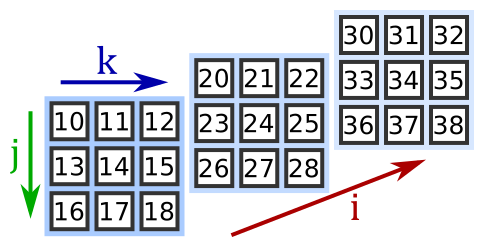

Problem 2.12#
Indexing is used to obtain individual elements from an array, but it can also be used to obtain entire rows, columns or planes from multi-dimensional arrays.
2.1 Indexing in 1 dimension#
We can create 1 dimensional numpy array from a list like this:
import numpy as np
A = np.array([1, 2, 3, 4])
print(A) # [1, 2, 3, 4]
In the following cell, please show the element in \(A\) whose index is 0.
2.2 Indexing in 2 dimensions#
We can create a 2 dimensional numpy array from a Python list of lists, like this:
M = np.array([[1, 2, 3],
[4, 5, 6],
[7, 8, 9]])
Here is a diagram of the array:
Picking an element#
We can index an element of the array using two indices. Please show the element in \(M\) with row index i=1 and column index j=2.
That is quite similar to what would happen with a 2D list. However, numpy allows us to select a single column as well. Please show the column in \(M\) with column index 2.
2.3 Indexing in 3 dimensions#
We can create a 3 dimensional numpy array from a Python list of lists of lists, like this:
T = np.array([[[10, 11, 12], [13, 14, 15], [16, 17, 18]],
[[20, 21, 22], [23, 24, 25], [26, 27, 28]],
[[30, 31, 32], [33, 34, 35], [36, 37, 38]]])
Here is a diagram of the array: 
A 3D array is like a stack of matrices:
The first index, i, selects the matrix
The second index, j, selects the row
The third index, k, selects the column
Note
The above diagram is the NumPy convention for data storage. The dimensions in the code and the dimensions in the physics may or may not match depending on how it is programmed. You may find that other coding languages also use different storage conventions.
Please show the element in \(T\) with the index [2,0,1] (layer index i = 2, row index j = 0, and column index k = 1) in \(T\).
This selects matrix index 2 (the final matrix), row 0, column 1, giving a value 31.
Picking a row or column in a 3D array#
You can access any row or column in a 3D array. There are 3 cases.
Case 1 - specifying the first two indices. In this case, you are choosing the i value (the matrix), and the j value (the row). This will select a specific row. Please select row 2 from matrix 1:
Case 2 - specifying the i value (the matrix), and the k value (the column), using a full slice (:) for the j value (the row). This will select a specific column.
Please select column 1 from matrix 0 in \(T\).
Case 3 - specifying the j value (the row), and the k value (the column), using a full slice (:) for the i value (the matrix). This will create a row by taking the same element from each matrix. In this case we are taking row 1, column 2 from each matrix:
Picking a matrix in a 3D array#
If we only specify the i index, numpy will return the corresponding matrix. We will call this case 1. Please show matrix 2 in \(T\):
Case 2 if we specify just the j value (using a full slice for the i values), we will obtain a matrix made from the selected row taken from each plane. Please take row 1 in \(T\):
Case 3 - if we specify just the k value (using full slices for the i and j values), we will obtain a matrix made from the selected column taken from each plane. Please take column 0 in \(T\):